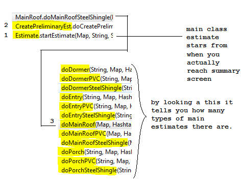
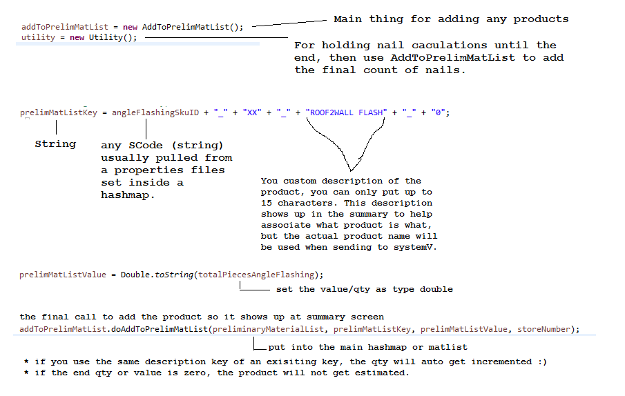
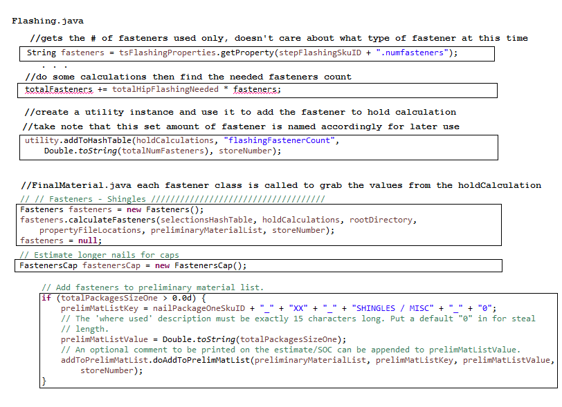
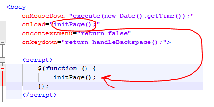
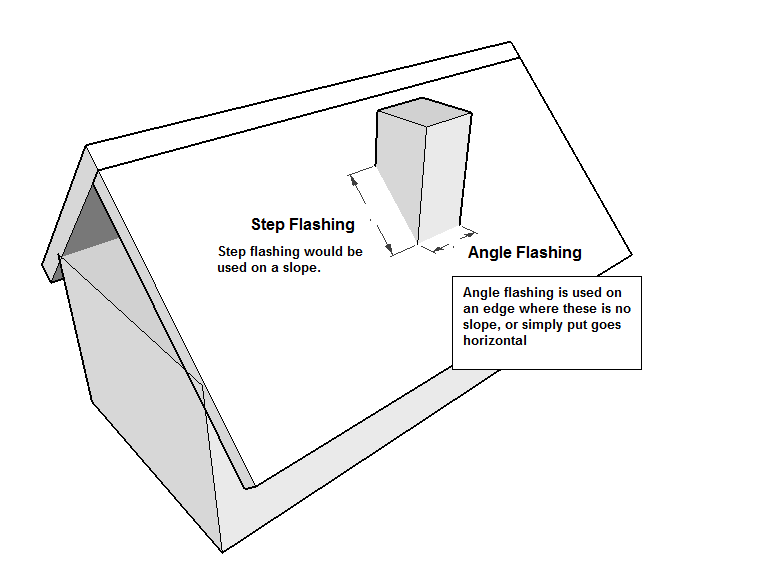

Application that sells roofing materials and Gutter materials.
Our web apps like roofing and siding also utilize using multiple environments. So that for dev we would load properties for dev only, same goes for stage and prod. Siding and roofing tend to have this wierd location where it put its appConfig.properties file.
opt/Kiosk/RoofingEstimator/appConfig.properties
If the appConfig.properties isn't found, the RoofingEstimator.log will log this error (although the app may not crash) it can get annoying. to fix this, you don't have to touch the properties file location nor the statsLogging.java. Just create these folders under your root C:Drive opt/Kiosk/RoofingEstimator/ and put the appConfig.properties here.
This doesn't happen in prob proably because the folders do exist in prod
Hint, if a product sku is not in roofingSkuID.properties, which it wont then also have a sCode, then that product will never estimate as it won't exist in the app
Overview of the top estimte clases

At the most basic level of adding a product to the estimation, it is this.
The way how fastener are estimated in roofing is this. During Estimate, it will gather the needed fastener into a temporary hashtable called holdCalculation. Utility is called at the end of each estimate to pass the holdCalculation hashtable to another thread like so for the later final estimation. When FinalMaterial.java is called, each Fasterner.java, FastenerCap.java is called to use those values inside the hold calculations. Each fastener class is what determines the type of fastener sku to use. It is then put inside the preMatList like how other products are added.
Before you start debugging Roofing there are some things you'll need to understand.
If your code didn't get changed on stage after deployment, make sure you clear the cache. Open roofing in the browser, hit ctrl + F5 to clear the browser cache. This could be due to why, the tester failed to run your code, the lab pc also needs, to be refreshed in its cache if the PC has not been rebooted.
Any browser will usually work in debugging js. Just press f12. You will only see js files that are loaded in the currrent page, so make sure you are on the correct page to target the js file you want to test.
In IE11, look for paging.js, breakpoint there as it seems to play responsibility in modifying item links onto a tag element
First test stage kioskURL to see if stage is down.
2nd check the logs on tcserver designit instance
If app is working stage isn't down. next try looking into ItemDisplayController. Everyscreen seems to use the class ItemDisplayController to make the calls to SQL connections. and loads them into a ItemObjects to be ready for jsp to use to display it on screen.
Check your TCServer designit instance if it has the following JARS
If it is your first time setting up Tcserver or roofing on your PC, also view checklist
It could be that the screenXXXX.do page onload event never was able to call the initPage() method, (method located in paging.js). The initPage() handles appending the item's image path to the document. So go to browser debugger, load up the page, and find and break point at initPage(). If the initPage() or start() onload isn't being properly loaded, one solution is to refactor it into a jquery on document ready. This was bug when running roofing/siding locally on tcserver and running in IE8 enterprise mode.
When kiosk urls are not showing products either and you get these logs, it is a DBA question not the Avetti Team.
2016-01-28 10:59:34,848 INFO [MAIN] Screen1402DisplayControler() No Products setup for PP_SNAP_XX at store 4444
Email DBA (usually Lane Larson (DBA manager) and CC one of the roofing primaries) and see what's going on for both curhist_d or curhist_s
Usually it is the case that either we can't point to a custom store of our choice or usually the data didn't repopulate products correctly
Run the app in browser > press f12 > at top of html is a hint of what jsp page is running the current page
Use the url name. When you go to a new page, in the url you will see something like /screen2002.do. That is the screen name of the previous page (it's not the name of the current page you are viewing, wierd but that's the way it is). Visit the tiles-def.xml file > search for that screen name > each screen is mapped to a jsp file, and that's how you know what jsp runs that screen. You can further look inside that jsp if it has any other dependents.
Need to look up what jsp calls in what image: Look up the image by its prefix doing a file search in eclipse
Unfortunately it's not a one switch type of deal to modify screen flow changes in roofing. First you want to start with the structs-config.xml. If you modify the structs file, and make screenA able to jump to screenC, you should also modify screenC to enable it to jump back to screenA. It's tedious but a must do.
structs-config.xml
Holds all the possible screens that can link between each other going forward and backward.
tiles-def.xml
holds data on what (possible) items should be displayed on a specific screen.
Also is a list of all the possible screens in roofing. The first line under each screen tells you want controller
it is using and what jsp that screen is using.
tiles-def.xml screen defines the layout.JSP page to use on what screen and what java controller to use. The layout.jsp uses handles displaying items on the screen. It uses JSTL and sometimes javascript to layout the items. layout.jsp may call/include a javascript to sort the items on the page. To know what javascript the JSP layout uses, check the .jsp file near top to see if an include was added or not. Sometimes, javascript is used to target the elemtent by id and then assign the image from the js file rather than use JSTL to assign the image src.
screenXXXXAction.java
The class that has the two forward and back method on what screen to jump to. Controlls what screen can or should jump to according to what's selected.
The web apps like roofing and sidings are deployed differently than the regular standalone apps that goes through altiris and gets released store by store. When the web apps gets released (as they are just a website) the apps is release nation wide to all stores. The web apps have two types of deployment -- rolling deployement and nightly deployment.
When a web app like Roofing is ready to get deploy at the end of every release cycle, we determine if roofing can be a rolling deployment or nightly deployment. The simple rule of thumb is, if there is no media involved or screen changes or new additions, and just some code changes, then it qualifies for rolling deployment.
The benefit of rolling deployment is that we can deploy it during the day while we are at work. The only downside is that since we have to deploy the roofing App1 and App2 server both, it has to be done under a time limit, usually we have a 30 minute time frame limit for deploying App1.
What happens is that during the deployment at the indicated time on this site you'll need to go to, the server will auto shut down App 1, and then at 30 minutes later, it will shut down App 2. What we need to do is, as soon as App1 is shut down, we need to start it back up (through command line), run our test quickly with the web app open to see that our changes are on it, and then reactive the App1 server on the site, so customers can get back on app1 server again. We must do this before App2 server starts its shutdown or else App1 will be shut off and as well as App2 be be shut off, so no one can use Roofing for the time being. Keep in mind we are deploying this live, so one server always has to be up. Once App1 is down and back up and active, app2 can have as much time it needs to do its testing if need be -- because everyone can be using App1 server while App2 is down. So app2 doesn't really have a time frame, just don't keep it off so long.
If junit test don't run out of the box, and gives you a missing class TestCreatePreliminaryEst.java, try maven update it should fix the problem and you should be able to run the test cases
When introducting new propertie files or altering properties files, make sure you also copy the file and paste it under the test folder as the Junit test will run off the test properties files.
Junit in roofing is possible but it has a unique setup and you must use it. For gutter Junit, you want to use TestGutterEst.java. This class calls in a external file such as (GutterEst1.txt ... gutterEst7.txt). Each text specifies the selections made in Roofing Gutter. These weren't manually type, they are copied from the selectionsHashTable that can be viewed if you set a break point inside CreatePreliminaryEst.java or better yet, in Estimate under startEstimate() towards the end of the method. Highlight all the hash values under selectionsHashTable in the variables window and paste it in the text file to create your custom estimate. You can then debug the test case to show you what exact values are being put into the material list.
Hint: Put a break point in CreatePreliminaryEst.doCreatePreliminaryEst() at finalMaterials = null. To get the final material list values before it gets rounded off under the prelinimaryMatList hashtable. Hint2: Put a break point in Estimate.startEstimate at return this.finalMaterialList to get final selectionsHashTable to use for Junit.
To get the list of selected values to paste onto a testCreate.txt for junit, hover over SelectionsHashTable variable in one of the classes above during a break point.
Shortcut to quickly generate asserts for selections, look to testCreatePreliminaryEst.java. Call the method helpGenerateAsserts(hastable<>) within a setup test method to generete asserts in the console for you to copy and paste it back into the test case.
You want to look at the estimteSummary.java. turn on the logMaterialiForDev method and put a break point after this method call. Run the app and it will log the materials you see on screen into a hashtable variable for you to copy and paste into RQM.
The process is very different from Deck and Landscaping. The SelectionsForm stores user selections into a map at runtime. When it is time to estimate, towards the end of the program, The Estimate class will run. It will create another object call CreatePreliminaryEst (CPE). Inside CPE, it will call objects and their estimation individually. FinalMaterials is used when all the roofs are ready to be calculated, things like steel shingle options are calculated here.
Flashing is a technique and also a long material (usually galvanize, that can be cut into smaller parts). It is used to seal where edges meet on a roof to prevent leak from rain. To calculate flashing material is as simple as finding the perimeter of the edges. The total perimeter length(x2) + width(x2) is how much flashing material you need to cover that length if the shape is a sqare or rectangle. When you have a slope, it is when you may have to do some calculations using formulas like A^2 + B^2 = C^2 to find the hypothenues.
If you try maven update or try to build roofing and the java vesrion keeps switching to another version, it's probably due to the parent pom version. Update that version number of the parent pom.
When working with addons, such as dormers and entry addOns, one important variable is the addOnRoofIndex. It determines what type of addon was added and is depended on in order to grab the correct quantity (addOnQty) for the correct addOn type.
There is a way to know what addOn was selected and to know how to grab the correct addOnQty. Check out flashing, and search for addOnRoofIndex != null. That snippet of code is used to select and figure out how many addons are being added.
The way how addOn materials are estimated is quite weird. If you select an addOn selection and enter 9 for qty, the code does not loop through that addOn (Dormer, Entry, etc) class 9 times, it only loops once. Example: If you choose addOn type A and choose qty of 4. That counts as one selection of addOn. If you continue through and proceed to select again another addon, say addOn A again and choose qty of 5, it is now 2 counts of addOn selection. So the code will loop now twice. But inside each loop, it will use the corresponding qty 4 or 5, which ever addOn selection it is on. If you choose to add another addOn selection, say addOn B with 2 qty. The total loop will now become 3, with the third loop having 3 as the multiplier.
Estimate Id are used in each app to determine what app it is and where to send the estimation summary data for later evaluation. It also plays part in returning the saved design id for later recall. EstimateId is usually called at the very last screen before saving a design so the right estimation data can be processed to the correct place.
One way to know what app has what estimate Id, Check the appConfig.properties for dev/stage/prod and look for sourceIdRoofing
Like Flooring, there are 3 sections in Roofing: Roofing, gutter, soffit/fasica.
Design id is retrieved by using com.menards.storeservice.client.impl.StoreServiceClient.
Store service is set by StoreServiceClient storeServiceClient = new StoreServiceClient(storeServiceWsdlURL, userName, password, authType, true)
These values are stored in the app config and called into the session to be stored at runtime
When you get the store client, you generate the design id by through the createEstimate method
estimateID = (int)storeServiceClient.createEstimate(Integer.parseInt(storeNumber), estimateInfoMap, guestBillToMap, itemInfo, null);
appConfig.properties is where the value is stored. StatsLogging.java determines what estimate id is set at the very begining of the app. KisokServerClient.java gets the correct estimateId value for roofing,soffit, or gutter at the print summary when print is pressed.
sourceIdRoofing=29 estimateTypeIDRoofing=2200
sourceIdGutter=19
estimateTypeIDGutter=25
sourceIdGutter=19
estimateTypeIDGutter=25
To access sessions get it from the httpServletRequest
HttpServletRequest request; //google how to get request HttpSession session = request.getSession();